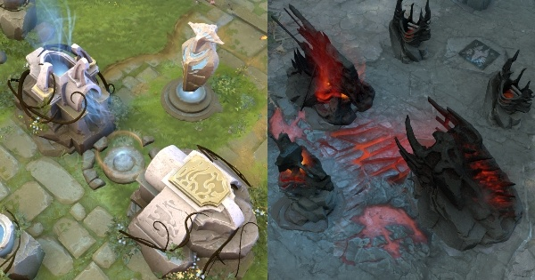

Dota 2 is a multiplayer online battle arena (MOBA) video game developed and published by Valve. The game is a sequel to Defense of the Ancients (DotA), which was a community-created mod for Blizzard Entertainment's Warcraft III: Reign of Chaos. Dota 2 is played in matches between two teams of five players, with each team occupying and defending their own separate base on the map. Each of the ten players independently controls a powerful character, known as a "hero", who all have unique abilities and differing styles of play. During a match players collect experience points and items for their heroes to successfully defeat the opposing team's heroes in player versus player combat. A team wins by being the first to destroy the other team's "Ancient", a large structure located within their base. And here's The Map details
MAPS
Default Map
The Map is the playing field for all Dota 2 matches. It is comprised of two sides, one for the Radiant icon.png Radiant faction, and one for the Dire icon.png Dire faction
Autumn
Released: 05 Oct 2016. This terrain is awarded to subscribers of Dota Plus. It is temporary and will expire after the season ends.
Desert
Released: 16 Dec 2015. This item was awarded to players who owned The International Compendium 2015.
Immortals Gradens
Released: 16 May 2016. This terrain is awarded to players who own The International 2016 Battle Pass and leveled it to 125.
The King's New Journey
Released: 16 May 2016. This terrain was released with Monkey King minimap icon.png Monkey King.
Reef's Edge
Released: 04 May 2017. This terrain was awarded to players who own The International 2017 Battle Pass and leveled it to 150. It comes with the Reef's Edge Loading Screen.
Spring
Released: 16 May 2016. This terrain is awarded to subscribers of Dota Plus. It is temporary and will expire after the season ends.
Winter
Released: 27 Jan 2016 .This terrain is awarded to subscribers of Dota Plus. It is temporary and will expire after the season ends.
TOWER
The main line of base defense, towers are the primary buildings that can attack. Both the Radiant and the Dire have three lanes which are guarded by three towers each. Their Ancient is guarded by two neighboring towers. Towers are a higher tier depending on how far they are in the lane. Every tower, except for Tier 1 towers, are invulnerable until the lower tier tower in front of it is destroyed. The two Tier 4 towers defending a team's Ancient become vulnerable if any Tier 3 tower is destroyed. Barracks do not have to be destroyed to make these towers vulnerable. Both Tier 4 towers must be destroyed in order to remove the Ancient's invulnerability.
Towers can be denied, just like creeps, once they have 10% health or less. Denied towers give half the bounty to the team that denies it, and half to the enemy team.
Attack Priority
Towers have a specific targeting priority that determines which enemy it will attack. Listed from highest priority to lowest.
Closest enemy unit or hero attacking a friendly hero with auto attack
Closest enemy unit or hero attacking the tower itself with auto attack
Closest enemy unit or hero attacking any friendly unit with auto attack
Closest enemy unit
Closest enemy hero
Closest enemy catapult
Towers do not attack neutral units.
The tower will only switch targets under three circumstances:
If the targeted enemy unit or hero dies (target is removed)
If an enemy unit or hero targets a friendly hero within 500 range of the tower (priority 1)
If an enemy hero being attacked by the tower manually attacks a friendly unit or hero (this is a strategy known as removing tower aggression, or "tower aggro" to get a tower to stop attacking you, forcing it to switch targets)
Static Tower
Tier
Health
Damage
Armor
Base Attack Time
Armor Aura
1
1800
100-120
12
1
2
2
2000
170-180
16
0.95
3
3
2000
170-180
16
0.95
3
4
2100
170-180
21
0.95
3
Barracks

Barracks are buildings that spawn Lane Creeps and are defended by Tier 3 towers. There are two barracks for each lane. The Melee Barracks is always to the right and the Ranged Barracks is always to the left, no matter which faction's side of the map you are on. Destroying an enemy Barracks grants your team's corresponding lane super creeps. For example, if you destroy the middle lane's Melee Barracks, your middle lane will now spawn Super Melee creeps.
Destroying all of the enemy base's barracks will cause an announcement to sound, alerting both teams that you are now spawning mega creeps. This upgrades Super creeps to Mega Creeps, making them even more powerful. See Lane Creeps for more details. Creeps will always spawn, regardless of whether there is a barracks or not. Barracks are invulnerable until the corresponding tower that guards them is destroyed.
Ancient
Ancients (also known as Thrones) are massive structures and the main objective. To win, your team must destroy the enemy Ancient. Ancients have no offensive abilities, but are guarded by towers and powerful team of five heroes. The Ancient is invincible until both Tier 4 towers are destroyed.
Fountain
The fountain is a structure located in the respawn area of each base, and provides a healing and mana regeneration aura to all allied units near it.
Bottles are automatically refilled when you are near the fountain. The Home Shop is located at the fountain.
Shrines
Shrines are regenerative structures. Each team has 1 Shrine on the map, near to Roshan. They can be directly teleported to just like all other team buildings. Shrines are invulnerable until a Tier 3 tower is destroyed. Shrines do not have vision.
Pillars
Pillars or Effigies are smaller structures that act as buffers within a base, making creeps take longer to reach actual towers and give the base's defenders more time to act. Invulnerable until a Tier 3 tower is destroyed.
Outpost
×
There are two of these on the map, located where the Side Shops were previously. Right clicking to channel it takes several seconds and then you gain control over the outpost. Converts faster with more allies channeling. Having control over an outpost grants you bonus XP upon initially capturing it, and at 10 minute intervals on the game clock. It also provides your team unobstructed vision in that area and allows you to TP to it. Outposts are inactive for the first 10 minutes of the game and cannot be captured until then.